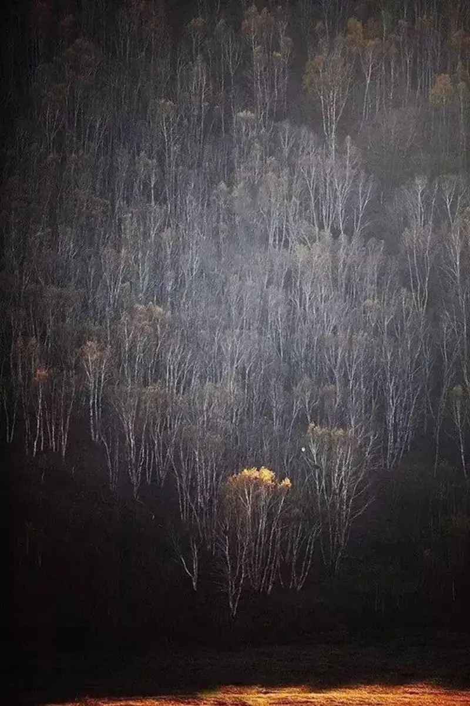
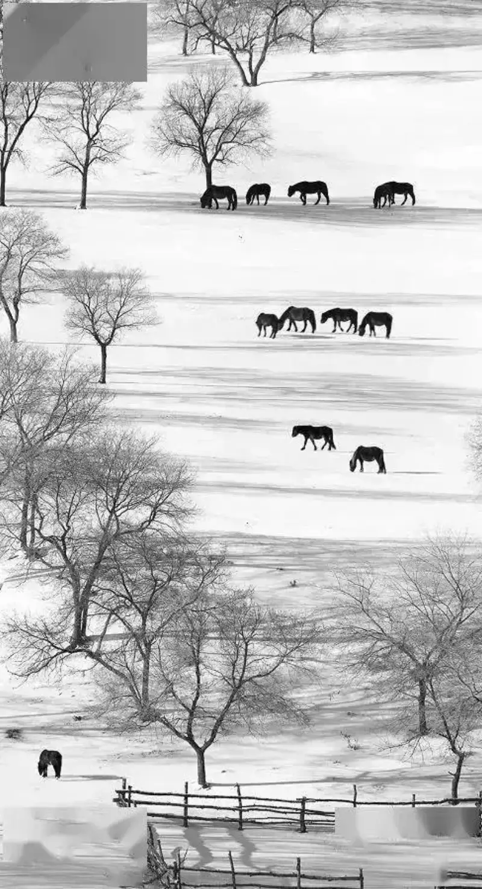
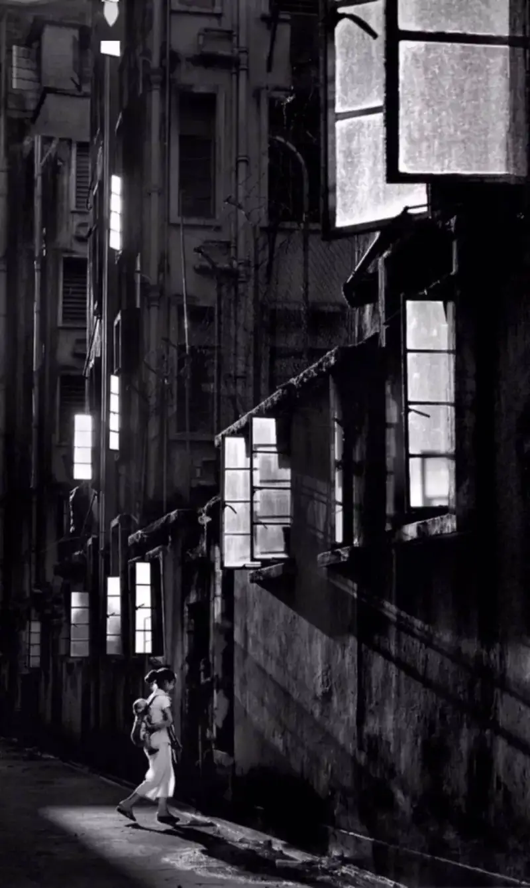
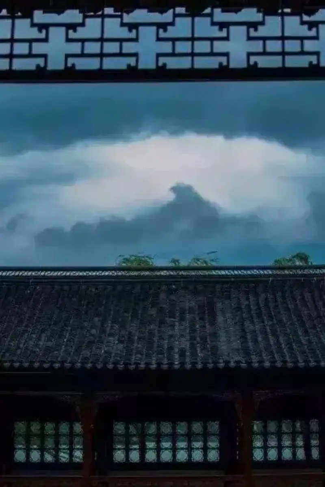

In everyday shooting,
90% of people use horizontal composition out of habit.
But when you try vertical composition,
the result may hit harder.
Our eyes sit side by side horizontally,
and cameras are built as horizontal frames,
so people are used to horizontal composition.
But phone screens are vertical,
phone photography is more and more popular,
and vertical composition has grown popular too.
The charm of vertical composition
is its special mood.
This way of looking, from near to far and back again,
builds layers step by step,
and makes it easy to emphasize the center.

So how do you use vertical composition in photography,
and how do you bring out its visual tension and mood?

1. Line composition
Lines come in many types:
horizontal and vertical, both regular and irregular.
(1) Vertical lines:
When the lines in the frame are mainly vertical,
use vertical composition.
The master photographer Fan Ho used vertical composition very often.
Follow the China Photo Network WeChat account: wwwcnphotosnet.
We share more photography tips and work there.

A single line struggles to set off a subject,
and vertical composition brings out the vertical tension.
(2) Horizontal lines:
Use a telephoto lens to compress the frame.
It makes the rhythm stronger,
and the frame stretches from near to far.
We often shoot car light trails in horizontal format.
In vertical format, the light trails fill the frame.
2. Dot composition
In still life, without a point of interest,
the frame feels flat.
A point of interest expands the vertical space,
and leaves room for the imagination.
(1) Play on size contrast:
Choose a point that is small enough,
or find an object that contrasts with the subject.
Through the contrast of size,
you bring out depth.
(2) Add layers:
Dot composition also needs layers.
In the image below, the flying bird is the center.
The frame splits into three layers from near to far:
foreground, midground, and background.

(3) Shape with light:
The frame needs not only vertical lines,
but also light and shadow.
In the image below, the narrow light comes from the gap between the mountain and the clouds.
It focuses the eye on one spot.

(4) Deepen the feeling:
When you find a point of interest that echoes the setting,
the work moves people more.
3. Empty space
Empty space comes from Chinese ink painting.
Old painters also used vertical scrolls well.
They added empty space to keep the frame simple
and bring out the mood.
(1) Empty space from a blurred background:
Even the simple empty space of one leaf
carries a quiet beauty.
To shoot this, open the aperture wide,
zoom to the long end,
and raise the shutter speed.
(2) Empty space from a changed composition:
Use a frame-within-a-frame to make empty space.
The frame takes on a different feel.

(3) Where there is fog, there is empty space:
Autumn and winter are the best seasons to shoot fog.
Fog is the best way to create empty space.
(4) Empty space and dark space:
We can also call empty space dark space.
A dark background sets off the subject more.
A dark background needs light on the subject,
so you can push the background dark.
4. How to shoot grand landscape images
Landscape shooters now like to use a foreground.
To set off the foreground
and show the impact of a wide angle,
people use many post-processing methods,
such as panorama stitching, depth stacking, and focal-length blending.
These skills are not only for horizontal frames.
They are also widely used in vertical frames.
With a wide-angle composition,
vertical composition is common too.
A wide angle exaggerates the foreground,
and makes the frame richer.
The same goes for starscapes.
Choose a rock or a flower as the foreground.
That is also the key to vertical composition.
Lock the camera position.
Shoot the landscape in moonlight,
then shoot the stars after the moon sets.
To get a frame that is sharp from near to far,
lock the camera position,
change the focus point,
take several shots from near to far,
and blend them in post-processing.
A wide-angle frame exaggerates the foreground and shrinks the distance.
For this kind of frame, change the focal length to shoot near and far separately,
and blend them in post-processing,
to bring out the whole frame.
Of course, there are many ways to shoot with a wide angle plus vertical frame.
Judge by the terrain.
Vertical composition fits when the frame has a strong foreground and good lines.

That is all for today.
Break your usual shooting habit,
and try vertical composition.
Your frames may hit harder.